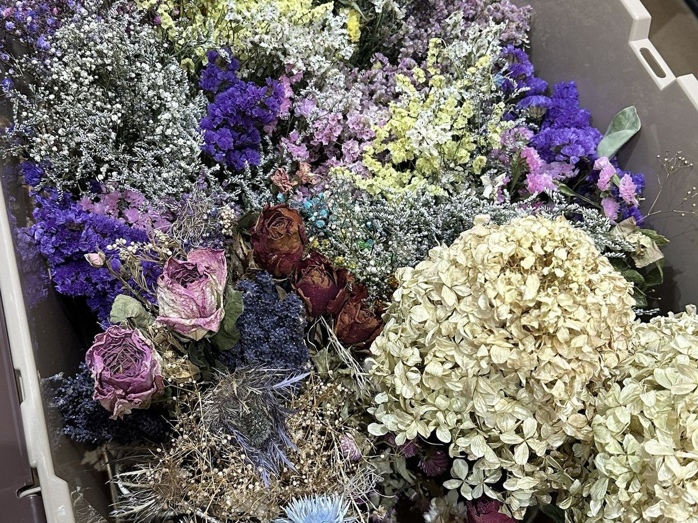
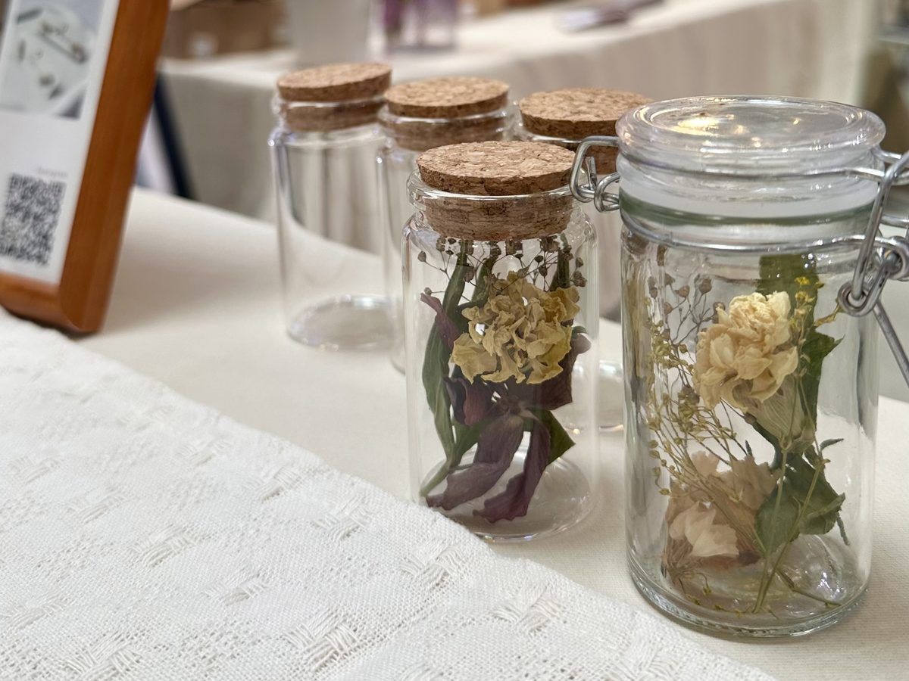

Proposal for housing
モデルハウスの玄関、リビング、窓辺。
「どこに飾るか」を先に決めて、その空間の色から花を選び、フラワーボトルをつくる体験です。住まいを見る時間の中に、暮らしに花を置く場面をひとつ加えます。
01
飾りたい場所を、モデルハウスの中から選びます。
02
床・壁・ファブリックの色を手がかりに花材を選びます。
03
ピンセットでボトルに詰めます。制作は約10〜15分。
04
選んだ場所に置いて撮影し、そのままお持ち帰り。
ikyuは2026年6〜9月に商業施設・公共空間の6会期で、フラワーボトル1,127本の制作をご一緒しました。住宅展示場・モデルハウスでの開催は、今回が初めてのご提案です。


Two plans
| 簡易版総合住宅展示場向け／センターハウス・イベント広場で | 完全版個別モデルハウス向け／モデルハウスの室内で | |
|---|---|---|
| 場所の選び方 | 展示場内の住まいの写真・色見本カードから、飾りたい場所を選ぶ | 実際の部屋を見て回り、飾りたい場所を選ぶ |
| 花材 | 定番の花材から、選んだ空間の色に合わせて選ぶ | その家の床・壁・ファブリックに合わせて、ikyuが事前に花材を用意 |
| 飾る | 撮影コーナーで撮影し、お持ち帰り | 選んだ場所に置いて撮影し、お持ち帰り |
| 所要時間 | 制作 約10〜15分 | 制作 約10〜15分＋部屋を見る時間（会場に合わせて設計） |
| 受け入れ方 | 予約不要で、来場者が立ち寄れる形 | 来場予約の方を中心に、時間を区切った形（想定） |
| 会場側のご準備 | ブーススペース、テーブル・椅子 | 室内の動線と養生、作業する場所の確認 |
| 追加のご相談 | — | ikyuがその家の色に合わせた展示用ボトルを制作し、会期中に設置 |
| 費用 | いずれも企業負担型（来場者は無料）を基本に、内容をお伺いして個別にお見積もりします | |